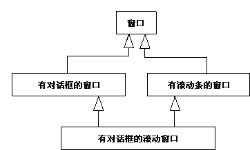

| 指南：泛化关系 |
 |
|
泛化关系在现实生活中的许多事物都有共同的属性。例如，狗和猫都是动物。对象也可以有共同的属性，您可以使用它们的类之间的泛化关系来阐明。 通过将共同的属性抽取到它们自己的类中，您将能在将来更容易地变更和维护系统。 泛化关系显示一个类从另一个类继承。继承类称为后代。 被继承的类称为祖代。 继承意味着祖代的定义（包括任何特征，例如属性、关系或对其对象的操作）对于后代的对象也有效。 泛化关系是从后代类绘制到其祖代类的。 泛化关系可以分几个阶段进行，这使您可以对复杂的、多层次的继承层次结构进行建模。 一般属性置于继承层次结构的上部，而特殊属性则置于下部。换言之，您可以使用泛化关系来对更一般概念的特化进行建模。 示例 在回收机系统中，所有的类（罐、瓶和箱）均描述不同类型的存放项。 除了属于同一类型之外，它们还有两个共同的属性：都具有高度和重量。 您可以通过属性和操作，在单独的类“存放项”中对这些属性进行建模。 罐、瓶和箱将继承这个类的属性。
罐、瓶和箱这几个类具有共同的属性，即高度和重量。每个属性都是一般概念“存放项”的特化。 多重继承通过多重继承，一个类可以继承自其他几个类，尽管通常它将只继承自一个类。 如果您使用多重继承，则必须知道几个潜在问题：
 多重和重复继承。“带对话框的滚动窗口”类就多次继承“窗口”类。 在此环境下，一个可能出现的问题是：“有多少‘窗口’属性的副本包含在‘带对话框的滚动窗口’的实例中？”因此，如果您在使用重复继承，则必须明确定义此语义；在大多数情况下，这将通过支持多重继承的编程语言来定义。 通常，掌控多重继承的编程语言规则是复杂的，常常难以正确使用。所以，建议您只在需要时才使用多重继承，而且使用时始终要小心。 抽象类和具体类未进行实例化，而且其存在的目的只是供其他类继承，这样的类就是抽象类。 实际实例化的类是具体类。请注意，一个抽象类必须至少有一个后代才有用。 示例 “仓库处理系统”中的“集装箱地点”是一个抽象实体类，它代表不同类型的集装箱地点的共同属性。 该类由具体类“车站”、“运输机”和“存储单元”继承，这三个类均可充当仓库中的集装箱地点。 所有这些对象都有一个共同属性：它们能容纳一个或多个集装箱。
被继承的类（此处为“集装箱地点”）是抽象的，其自身并未实例化。 使用因为类构造型有多种用途，所以从一个类构造型到另一个类构造型的继承并没有意义。 例如，如果让边界类继承实体类，则会使边界类成为某种混合体。所以，您应只在具有相同构造型的类之间使用泛化关系。 可以使用泛化关系来表示类与类之间的两种关系：
您可以通过以下途径创建这样的关系：取出几个类的共同属性，并将这些属性放到一个单独的类中供其他类继承；或者创建一些将较一般的类特化的新类，并允许新类从一般类继承。 如果这两种变体一致，那么您应该不难设置类之间的正确继承。 但在某些情况下，它们并不一致，您必须小心保持继承的使用可以让人理解。最起码您应知道模型中每个继承关系的用途。 用于支持多态性的继承划分子类型意味着，后代是在任何情况下均可代替其所有祖代的子类型。 划分子类型是多态性的特殊情况，且是一个重要属性，因为它允许您设计所有客户端（使用祖代的对象），而无需考虑祖代的潜在后代。 这使得客户端对象更为普通且可复用。当客户端使用实际对象时，它将以特定方式工作，并将始终发现对象在执行任务。 划分子类型将确保系统能容忍子类型集中发生的变更。 示例 在“仓库处理系统”中，“运输机接口”类定义了用于与所有类型的运输装置（例如起重机和卡车）进行通信的基本功能。 该类定义了操作 executeTransport 及其他事项。
“卡车接口”和“起重机接口”类都继承自“运输机接口”；即，这两个类的对象将响应消息 executeTransport。这些对象随时都可以代替“运输机接口”，并将提供其所有行为。这样，其他对象（客户端对象）可以发送消息给“运输机接口”对象，而无需知道“卡车接口”或“起重机接口”对象是否将响应此消息。 “运输机接口”类甚至可以是抽象的，且其本身从不实例化。 在这种情况下，“运输机接口”可能只定义 executeTransport 操作的特征符，而由后代类来实施它。 有些面向对象语言（例如 C++）使用类层次结构作为类型分层结构，迫使设计人员在设计模型中使用子类型的继承。 其他语言（例如 Smalltalk-80）在编译时不进行类型检查。如果对象不能响应接收到的消息，它们将生成一条错误消息。 一个好主意是：即使在不进行类型检查的语言中，也使用泛化关系来表示子类型关系。 在某些情况下，应使用泛化关系来使对象模型和源代码更容易理解和维护，而无论语言是否支持。 继承的这种用法是否是好的行事方式，很大程度上取决于编程语言的约定。 用于支持实施复用的继承划分子类设定了泛化关系的复用方面。划分子类时，您考虑可以通过继承其他类定义的属性来复用实施的哪些部分。 划分子类节省了工作量，并允许您在实施特定类时复用代码。 示例 在 Smalltalk-80 类库中，类 Dictionary 继承了类 Set 的属性。
此泛化关系的存在的原因是，Dictionary 可以复用一些实施 Set 时所用的普通方法和存储策略。 即使 Dictionary 可以看作一个 Set（包含键－值对），但 Dictionary 不是 Set 的子类型，因为您无法向 Dictionary 添加任何种类的对象（只能添加键－值对）。使用 Dictionary 的对象并不清楚 Dictionary 实际上是一个 Set。 划分子类常常会导致产生不合逻辑的继承层次结构，这些继承层次结构难以理解和维护。 所以，除非在编程语言使用方面另有建议，否则建议您不要仅仅为了复用而使用继承。这种复用通常都难于维护。 类 Set 中的任何更改都可能意味着继承类 Set 的所有类也要进行大量更改。请注意这一点，并且只继承稳定的类。 继承实际上将冻结类 Set 的实施，因为更改它的代价太大了。 编程语言中的继承在设计中使用泛化关系，这应在很大程度上取决于编程语言中继承的语义和建议用法。 面向对象语言支持类之间的继承，但非面向对象语言则不支持。您应控制设计模型中的语言特征。 如果您在使用不支持继承或多重继承的语言，则必须在实施时模拟继承。 在这种情况下，您最好在设计模型中对该模拟进行建模，而不要使用泛化关系来描述继承结构。 如果使用泛化关系对继承结构建模，然后在实施时模拟继承，则会毁坏整个设计。 如果您在使用不支持继承或多重继承的语言，则必须在实施时模拟继承。 在这种情况下，您最好在设计模型中对该模拟进行建模，而不要使用泛化关系来描述继承结构。 如果使用泛化关系对继承结构建模，然后只在实施时模拟继承，则会毁坏整个设计。 在模拟期间，您将可能必须更改接口和其他对象属性。建议您按以下方式之一模拟继承：
示例 在此示例中，后代通过链接（它们是关联的实例）转发消息给祖代。
将“罐”、“瓶”和“箱”对象的公共行为分配给一个特殊类。 必要时，拥有此公共行为的对象发送消息给“存放项”对象来执行该行为。 |
© Copyright IBM Corp. 1987, 2006. All Rights Reserved. |